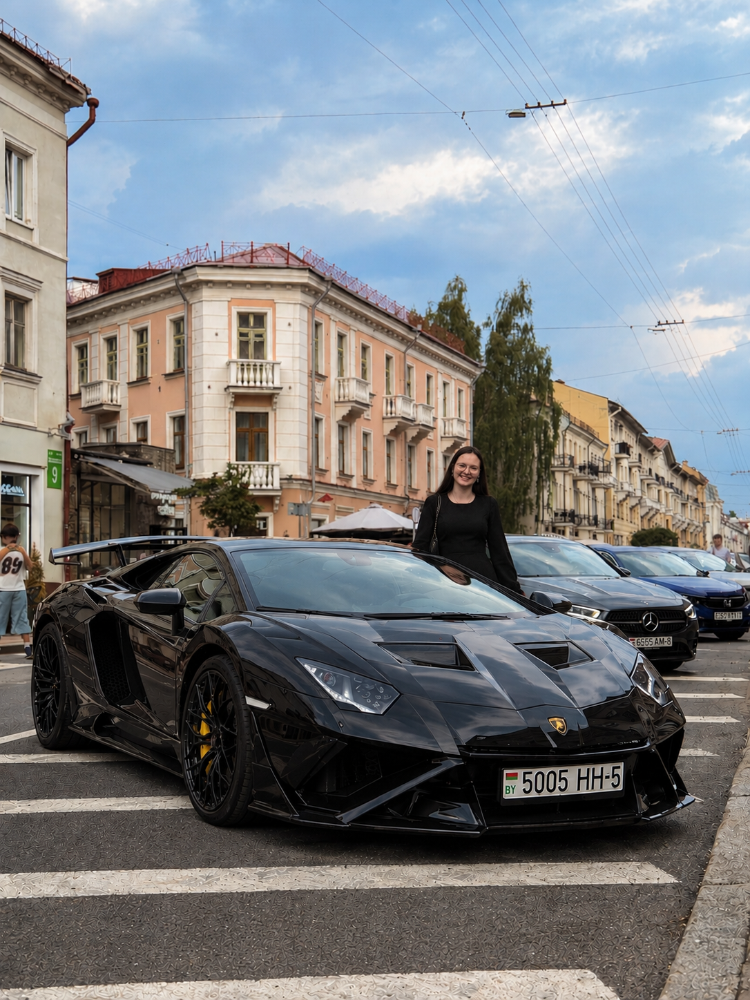

| Показатель для сравнения | Lamborghini | Voyah | Jaguar |
|---|---|---|---|
| Самая дорогая модель | Revuelto | Dream | F-TYPE |
| Самая дешёвая модель | Huracán | Free | E-PACE |
| Двигатель | V10 / V12 (бензиновый) или гибрид
Подробнее о двигателе и моделиRevuelto – флагманская модель с гибридной установкой V12 + 3 электромотора. Суммарная мощность – 1015 л.с. Разгон 0–100 км/ч – 2,5 сек. Максимальная скорость – 350 км/ч. Huracán – базовая модель с атмосферным V10 5.2 л (640 л.с.). Трансмиссия – 7-ступенчатый робот с двойным сцеплением. |
Гибрид (бензиновый или электромоторы)
Подробнее о двигателе и моделиDream – премиальный минивэн с последовательным гибридом. ДВС 1.5T (150 л.с.) работает как генератор, колёса крутят электромоторы. Запас хода – до 915 км. Free – кроссовер с гибридной системой. Расход топлива в смешанном цикле – около 1,5–2 л/100 км (при заряженной батарее). |
Бензиновый, дизельный или электрический
Подробнее о двигателе и моделиF-TYPE – спорткар с 5.0-литровым V8 с наддувом (450–575 л.с.). Трансмиссия – 8-ступенчатый автомат ZF. Разгон 0–100 км/ч – от 4,5 сек. E-PACE – компактный кроссовер с 2.0-литровым Ingenium (бензин/дизель). Известен проблемами с цепью ГРМ и балансирными валами. |
| Расход топлива | Очень высокий (суперкар) | Низкий (гибрид/электромобиль) | Зависит от двигателя (бензин/дизель) |
| Скорость (разгона от 0 до 100 км/ч) | ~2.5–3.5 сек | ~4.9–5.9 сек (для гибридных версий) | ~4.5–5.5 сек (зависит от модели) |
| Наличие экологических сертификатов | Экологический класс 6 (Евро-6) для некоторых моделей | Три сертификата соответствия углеродному стандарту (Intertek Green Leaf) | Соответствие стандарту Евро-6 (для дизельных и бензиновых версий) |
| Гарантийный срок | Стандарт: 3 года без ограничения пробега. На батарею: 8 лет (для гибридов) | Основные компоненты: 60 месяцев / 100 000 км. Тяговая батарея: 60 месяцев / 100 000 км | Стандарт: 3 года без ограничения пробега. Батарея (HEV): 5 лет без ограничения пробега. |
| Максимальная скорость | ~350 км/ч (Aventador) | ~200–203 км/ч | ~217–286 км/ч (зависит от модели) |
| Тип (механическая, автоматическая, вариатор) | Автоматическая | Автоматическая | Автоматическая |
| Количество передач | 7 | 7 | 8 |
| Лучшая фирма – Lamborghini, потому что она самая престижная и мощная среди трёх. Voyah и Jaguar уступают ей по статусу и надёжности. | |||
